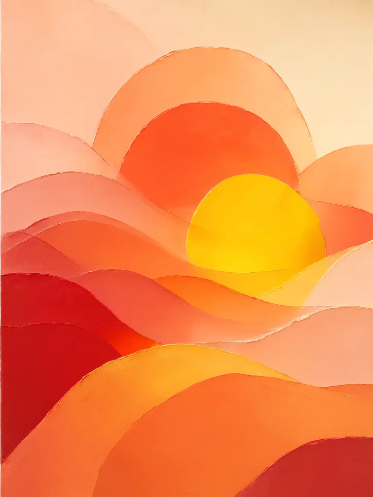
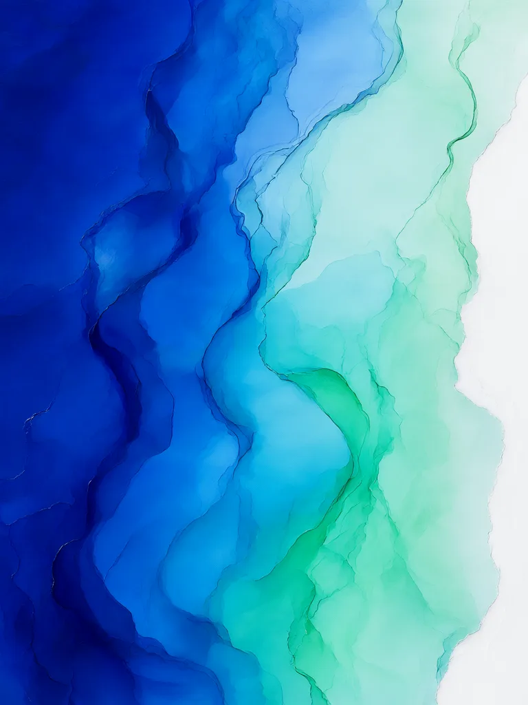
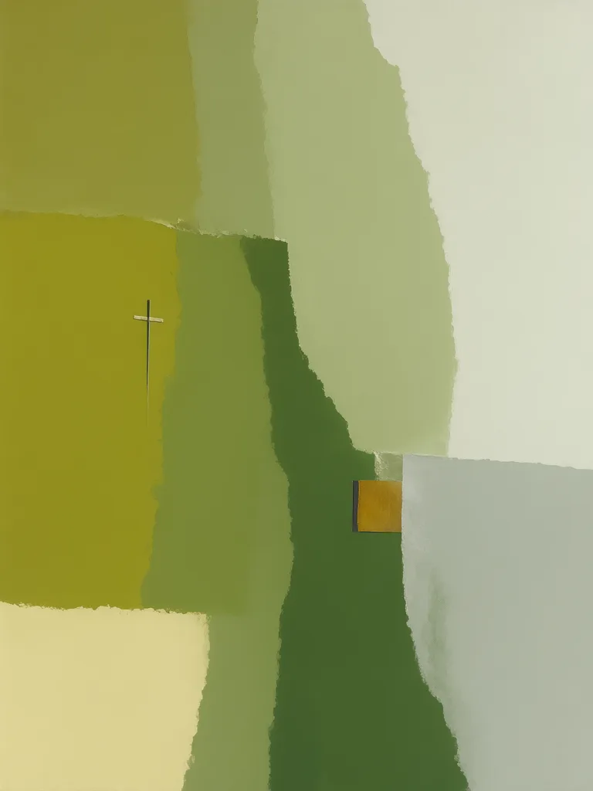
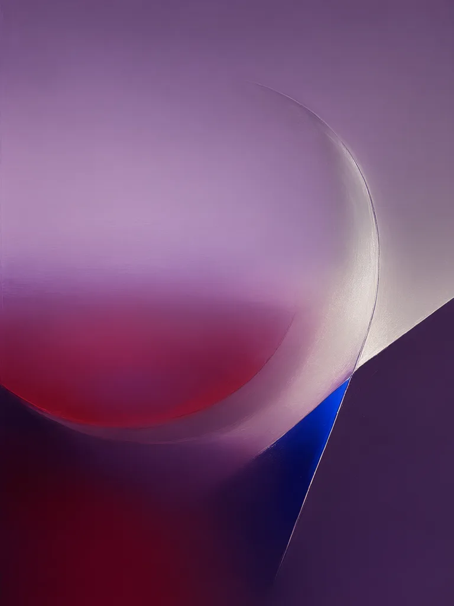
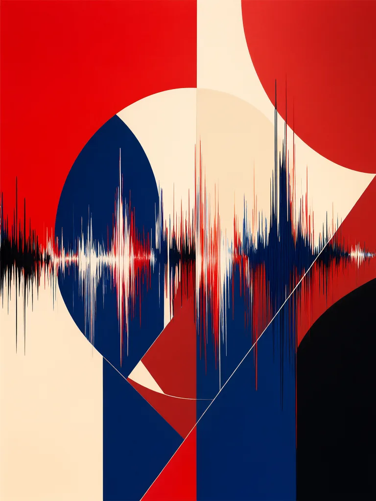
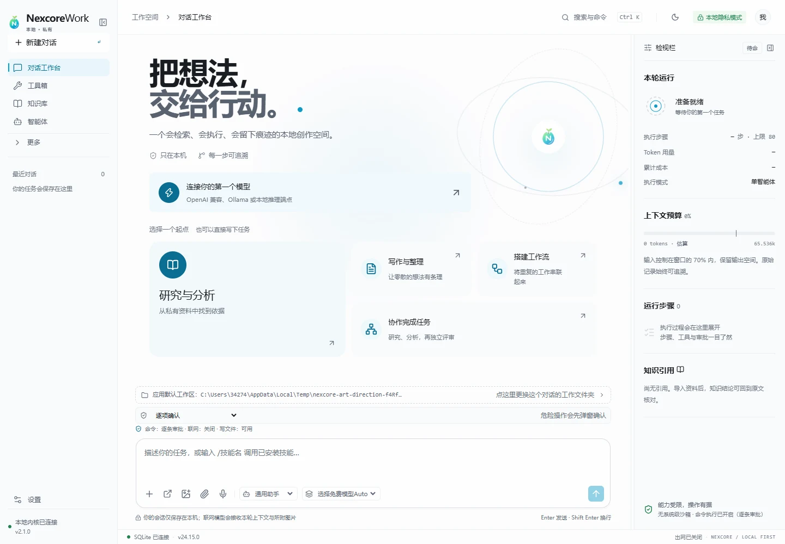
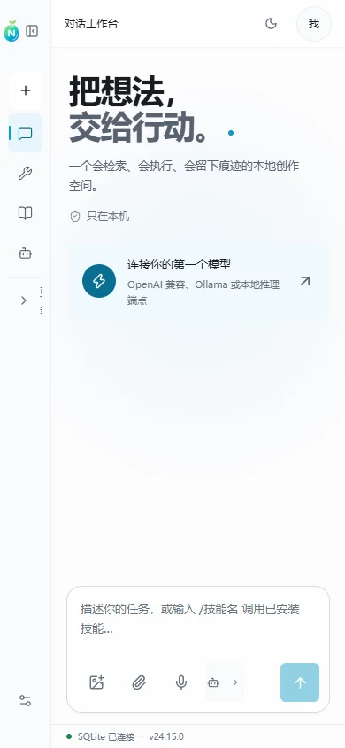

日潮
Solar Drift · 2026





01共05
从日落到潮汐，从田野到城市。每一幅作品都保留了颜料、纸张与光线相遇时的微小偏差。
Solar Drift · 2026
Quiet Field · 2024
Pulse · 2023
Intertidal · 2025
Violet Hour · 2025
NexcoreWork 2.3.0 Windows x64
一间留在本机的创作工作台。模型、知识、智能体与执行轨迹被收进同一片安静的界面，重要的事情始终清楚可见。
166.80 MB · 本地优先 · 未签名开发包



Lin Yao
林曜
林曜的创作在绘画、拼贴与数字媒介之间移动。她让颜色以不同密度叠压，再留出足以呼吸的空隙，使画面既像自然的切片，也像记忆的残余。
了解艺术家与收藏信息Studio visits by appointment · Shanghai